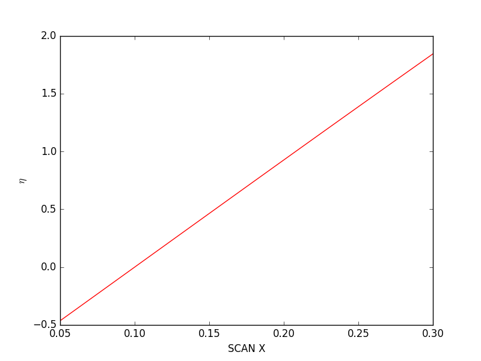

Example 2¶
Manually modeling accelerator machine step by step, by using beamline
modules: element, lattice, models and simulation, etc.
Warming Up¶
#!/usr/bin/python
import beamline
import matplotlib.pyplot as plt
# define elements by ``Element*`` class in ``beamline`` package
q = beamline.ElementCharge(name='q',)
q1 = beamline.ElementQuad(name='Q1', config='k1=10,l=0.2')
b1 = beamline.ElementCsrcsben(name='B1', config='angle=+0.4,l=0.25')
b2 = beamline.ElementCsrcsben(name='B2', config='angle=-0.4,l=0.25')
b3 = beamline.ElementCsrcsben(name='B3', config='angle=-0.4,l=0.25')
b4 = beamline.ElementCsrcsben(name='B4', config='angle=+0.4,l=0.25')
d1 = beamline.ElementCsrdrift(name='D1', config='l=0.5')
# create lattice model by ``Models`` class
lattice = beamline.Models(name='BL', mode='simu')
qline = (d1, q1, d1)
chi1 = (q1, d1, b1, d1, q1, d1, q1, d1, b2, d1, q1)
chi2 = (q1, d1, b3, d1, q1, d1, q1, d1, b4, d1, q1)
lattice.addElement(q, qline, chi1, qline, chi2, qline)
#ptches, anotelist, xrange, yrange = lattice.draw(showfig=False, mode='fancy')
ptches, anotelist, xrange, yrange = lattice.draw(showfig=False, mode='plain')
# show lattice in "fancy" mode
fig = plt.figure()
ax = fig.add_subplot(111, aspect='equal')
[ax.add_patch(i) for i in ptches]
ax.set_xlim(xrange)
ax.set_ylim(yrange)
ax.set_yticks([])
#plt.grid()
plt.show()
The above snippet shows how to build a simple lattice line from scratch, that is:
Create elements, one by one, with
Elements*class[es] that withinbeamlinepackage, always assign the element with a meaningful name, it’s better to follow some naming rules;Create lattice model instance, by the
Modelsclass, define the beamline name to be modeled bynamekeyword, andmodekeyword to indicate which mode should be modelled, could be selected fromsimuandonlineoptions, which stands forsimulation modeandonline mode, ifmode='simu', then all parameter values should be assigned with fixed values (usually defined in the element creation step), whilemode='online'would trig such on-line procedure:
- The data acquiring process will try to get the value from control fields, e.g. some EPICS PV string named channels;
- If failed, then rollback to simulation mode, i.e. using the values that defined for simulation mode;
- The EPICS PV control fields could be defined by
setConf(type='ctrl')method for allElement*classes.
lattice is now an instance of class Models, the draw() method
is responsible for showing the lattice layout with defined style, i.e.
fancy (left) or plain (right):
{kind=link}
{kind=link}
Online-modeling a Chicane¶
Below is an example to modeling a four-dioples separated chicane by hand, to follow the steps:
Start an IOC to provide the EPICS control environment, e.g. to link a few (one or two) valid PVs with some quadrupoles;
Create magnetic elements one by one, it is suggested to follow the lattice/beamline element appearance sequence;
Instantiate with
Modelsclass;- Create lattice:
- Generate lattice file for simulation;
- Other manipulations;
Here goes the details:
Start IOC to mimic real control environment
{kind=link}
Start IOC

List available records (PVs)
Create elements
Import proper packages:
#!/usr/bin/python
# coding: utf-8
import beamline
import os
import matplotlib.pyplot as plt
import matplotlib.patches as patches
import copy
Next, the very first step need to push forward is to correctly model the
physical elements (one by one), in the beamline package, magnet
components classes could be found in element module, e.g. quadrupole
is abstracted in ElementQuad class, charge is in ElementCharge, etc.,
they are all inherited from MagBlock.
The common or shared information/configurations for all these elements
could be predefined in MagBlock class, e.g. we can put information
like facility name, time stamp, author/operator, etc., common information
is presumed not changed, so please defined in the first step, see STEP 1.
# STEP 1: define common information
# commdinfo = {'DATE': '2016-03-22', 'AUTHOR': 'Tong Zhang'}
comminfo = 'DATE = 2016-03-24, AUTHOR = Tong Zhang'
beamline.MagBlock.setCommInfo(comminfo)
# set visualization style
beamline.MagBlock.setStyleConfig(
config={'quad': {'fc': 'blue', 'ec': 'blue'},
'bend': {'fc': 'red', 'ec': 'red'}})
To set the elements’ configurations, method setConf(config, type) could
be used, in which config is either configuration string with the
format like k1=10.0,l=0.1 or python dictionary like {'k1': 10.0, 'l': 0.1},
and type is the configuration type to be confiugred, could be
comm (common configuration), ctrl (control configuration),
simu (simulation configuration), misc (miscellaneous configuration)
and all (all configurations).
The unit between EPICS PV value and real physical variable is usually
required to do conversions, so in the design stage, the method
unitTrans(inval, direction='+', transfun=None) is created for
handling such issue. One can define this conversion function at the
class stage, but this approach is limited to the case that all the
elements with the same type only could share the same conversion function,
which is not proper in the real situation. Thus, transfun is created
as the input function parameter for unitTrans method, which is a
user-defined function for each element object.
# STEP 2: create elements
# charge, this is visual element for the real accelerator,
# but is a must for elegant tracking
chconf = {'total': 1e-9}
q = beamline.ElementCharge(name='q', config=chconf)
# csrcsben, use elegant element name
# simconf is complementary configurations for elegant tracking,
# should set with setConf(simconf, type='simu') method
simconf = {"edge1_effects": 1,
"edge2_effects":1,
"hgap":0.015,
"csr":0,
"nonlinear":1,
"n_kicks":100,
"integration_order":4,
"bins":512,
"sg_halfwidth":1,
"block_csr":0,
'l':0.5,}
angle = 0.1 # rad
B1 = beamline.ElementCsrcsben(name='b1', config={'angle':angle, 'e1':0, 'e2':angle})
B1.setConf(simconf, type='simu')
B2 = beamline.ElementCsrcsben(name='b2', config={'angle':-angle, 'e1':-angle, 'e2':0})
B3 = beamline.ElementCsrcsben(name='b3', config={'angle':-angle, 'e1':0, 'e2':-angle})
B4 = beamline.ElementCsrcsben(name='b4', config={'angle': angle, 'e1':angle, 'e2':0})
B2.setConf(simconf, type='simu')
B3.setConf(simconf, type='simu')
B4.setConf(simconf, type='simu')
# drift
D0 = beamline.ElementDrift(name='D0', config="l=1.0")
Now the dipole and drift sections are created, here you can also issue
some methods to get the defined elements’ properties, e.g.:
print(B1.calcTransM(gamma=200)) to get transport matrix and
B1.printConfig(type='all') to show all the configurations.
Note
Always try to hit <TAB> when you’re working under command line interface, especially in IPython shell when you’re playing Python.
Next create quadrupoles and incorporate the unit-conversion feature.
Define the conversion function, the direction parameter indicates
the conversion direction, i.e.:
'+': conversion rule for EPICS PV (raw) value to physical (real) value;'-': conversion rule for physical (real) value to EPICS PV (raw) value.
def fUnitTrans(val, direction):
if direction == '+':
return val*4.0
else:
return val*0.25
To use conversion function:
# create instance and apply user-defined unit conversion function
Q1 = beamline.ElementQuad(name = 'Q1', config = "k1 = 10, l = 0.5")
simuconf = {'tilt':"pi 4 /"}
Q1.setConf(simuconf, type = 'simu')
# control configurations for Q1
ctrlconf = {"k1":{'pv':"sxfel:lattice:Q09",'val':''}}
Q1.setConf(ctrlconf, type = 'ctrl')
Q1.transfun = fUnitTrans # apply unit conversion function
Some testing to show the conversion rule has been applied successfully:
>>> Q1.printConfig(type='ctrl')
---------- Configuration START ----------
Element name: Q1 (ElementQuad)
Control configs:
k1 = sxfel:lattice:Q09, raw: 10.0, real: 40.0
---------- Configuration END ----------
>>> Q1.printConfig(type='simu')
---------- Configuration START ----------
Element name: Q1 (ElementQuad)
Simulation configs:
tilt = pi 4 /
l = 0.5
k1 = 10
---------- Configuration END ----------
>>> Q1.getK1(type='ctrl')
40
>>> Q1.getK1(type='simu')
10
Create models
Use Models class of models module, change mode to be simu
to start simulation mode, online mode will trig EPICS get/put processes
when control configurations could be found in elements’ configuration.
latline_online = beamline.Models(name='blchi', mode='online')
qline = (D0, Q1, D0)
chi = (B1, D0, B2, D0, D0, B3, D0, B4)
latline_online.addElement(q, qline, chi, qline)
# show artist layout
#latline_online.draw(showfig=True,mode='fancy')
To access what latline_online (which is an instance of
beamline.models.Models) provides:
>>> eleb1, = latline_online.getElementsByName('b1')
>>> print eleb1.name
b1
>>> # change b1 configuration, e.g. angle
>>> eleb1.setConf('angle=0.5', type='simu')
>>> eleb1.printConfig()
>>> # print out all added elements
>>> latline_online.printAllElements()
---------- Configuration END ----------
ID : Name Type Class Name
001: q CHARGE ElementCharge
002: D0 DRIFT ElementDrift
003: Q1 QUAD ElementQuad
004: D0 DRIFT ElementDrift
005: b1 CSRCSBEN ElementCsrcsben
006: D0 DRIFT ElementDrift
007: b2 CSRCSBEN ElementCsrcsben
008: D0 DRIFT ElementDrift
009: D0 DRIFT ElementDrift
010: b3 CSRCSBEN ElementCsrcsben
011: D0 DRIFT ElementDrift
012: b4 CSRCSBEN ElementCsrcsben
013: D0 DRIFT ElementDrift
014: Q1 QUAD ElementQuad
015: D0 DRIFT ElementDrift
>>> # get configuration of 'Q1'
>>> print latline_online.getAllConfig(fmt='dict')['Q1']
{'QUAD': {'tilt': 'pi 4 /', 'k1': 2.5, 'l': '0.5'}}
>>> # get all 'Q1' and change the drawing style of orange facecolor
>>> eleQ1all = latline_online.getElementsByName('Q1')
>>> map(lambda x: x.setStyle(fc='orange'), eleQ1all)
>>> print eleQ1all
[<beamline.element.ElementQuad object at 0x7f335a40b610>,
<beamline.element.ElementQuad object at 0x7f335a40b9d0>]
Note
addElement() method support replica expansion
functionality, when same named items are added into
the lattice tuple (e.g. qline in this example),
so when getElementsByName() is invoked, a list
would be returned, it is the user’s liability to
discriminate which one should be selected
and modified since they share the same literal name,
it is better to assign a new name once seleced from
the list.
>>> # update Q1's EPICS PV value, aim to set its true value
>>> latline_online.putCtrlConf(eleQ1, 'k1', 2.5, type='real')
>>> eleQ1.printConfig(type='all')
---------- Configuration START ----------
Element name: Q1 (ElementQuad)
Position: s = 1.000 [m]
Common configs:
DATE = 2016-03-24
AUTHOR = Tong Zhang
Simulation configs:
tilt = pi 4 /
l = 0.5
k1 = 10
Control configs:
k1 = sxfel:lattice:Q09, raw: 0.625, real: 2.5
---------- Configuration END ----------
>>> # update Q1's EPICS PV value, aim to set its raw value
>>> latline_online.putCtrlConf(eleQ1, 'k1', 2.5, type='raw')
>>> eleQ1.printConfig(type='all')
---------- Configuration START ----------
Element name: Q1 (ElementQuad)
Position: s = 1.000 [m]
Common configs:
DATE = 2016-03-24
AUTHOR = Tong Zhang
Simulation configs:
tilt = pi 4 /
l = 0.5
k1 = 10
Control configs:
k1 = sxfel:lattice:Q09, raw: 2.5, real: 10.0
---------- Configuration END ----------
Warning
The unit of ‘raw’ value here should be ‘A’, and ‘T/m’ for ‘real’ value, however it’s also the user’s liability to define correct unit conversion function at the element creation stage.
Lattice modeling
Lattice class in lattice module is created for make lattice
instance, the initial idea is to bridge the real machine and the
numerical simulation world, e.g. generate lattice file that could be
used by simulation code like Elegant.
# e.g. '.lte' for elegant tracking, require all configurations
latins = beamline.Lattice(latline_online.getAllConfig())
latfile = os.path.join(os.getcwd(), '../../tests/tracking/test.lte')
latins.generateLatticeFile(latline_online.name, latfile)
#latins.dumpAllElements()
The generated lattice file:
!-------------------------------------------------------------------------!
! This file is automatically generated by 'generateLatticeFile()' method, !
! could be used as elegant lattice file. !
! ------------------------ !
! Author: Tong Zhang (zhangtong@sinap.ac.cn) !
! Generated Date: 2016-08-23 16:29:01 CST !
!-------------------------------------------------------------------------!
! Element definitions:
D0 : DRIFT, l = "1.0"
Q1 : QUAD, tilt = "pi 4 /", k1 = "2.5", l = "0.5"
B1 : CSRCSBEN, hgap = "0.015", integration_order = "4", block_csr = "0", angle = "0.1", n_kicks = "100", edge2_effects = "1", edge1_effects = "1", l = "0.5", nonlinear = "1", sg_halfwidth = "1", csr = "0", e1 = "0", bins = "512", e2 = "0.1"
B2 : CSRCSBEN, hgap = "0.015", integration_order = "4", block_csr = "0", angle = "-0.1", n_kicks = "100", edge2_effects = "1", edge1_effects = "1", l = "0.5", nonlinear = "1", sg_halfwidth = "1", csr = "0", e1 = "-0.1", bins = "512", e2 = "0"
B3 : CSRCSBEN, hgap = "0.015", integration_order = "4", block_csr = "0", angle = "-0.1", n_kicks = "100", edge2_effects = "1", edge1_effects = "1", l = "0.5", nonlinear = "1", sg_halfwidth = "1", csr = "0", e1 = "0", bins = "512", e2 = "-0.1"
B4 : CSRCSBEN, hgap = "0.015", integration_order = "4", block_csr = "0", angle = "0.1", n_kicks = "100", edge2_effects = "1", edge1_effects = "1", l = "0.5", nonlinear = "1", sg_halfwidth = "1", csr = "0", e1 = "0.1", bins = "512", e2 = "0"
Q : CHARGE, total = "1e-09"
! Beamline definitions:
BLCHI : line = (q, D0, Q1, D0, b1, D0, b2, D0, D0, b3, D0, b4, D0, Q1, D0)
Now, the particle tracking by Elegant is possible by using the
generated lattice file.
simpath = '../../tests/tracking/'
elefile = os.path.join(simpath, 'test.ele')
h5out = os.path.join(simpath, 'tpout.h5')
elesim = beamline.Simulator()
elesim.setMode('elegant')
elesim.setScript('runElegant.sh')
elesim.setExec('elegant')
elesim.setPath(simpath)
elesim.setInputfiles(ltefile=latfile, elefile=elefile)
elesim.doSimulation()
The tracking output files could be found in simpath, that is in
../../tests/tracking folder.
An example of elefile is shown like:
&run_setup
lattice = test.lte,
default_order = 2,
use_beamline = BLCHI,
p_central = 70
sigma = %s.sig,
centroid = %s.cen,
output = %s.out,
magnets = %s.mag
!final = %s.fin,
print_statistics = 1
!parameters = %s.param
&end
&twiss_output
filename = %s.twi
matched = 0
alpha_x = 0
alpha_y = 0
beta_x = 10
beta_y = 10
&end
&run_control
n_steps = 1
&end
&bunched_beam
n_particles_per_bunch = 2500,
one_random_bunch=0,
emit_nx = 2.0e-6,
emit_ny = 2.0e-6,
beta_x = 20, alpha_x = 10,
beta_y = 20, alpha_y = 10,
sigma_dp = 0.001,
sigma_s = 300e-6,
distribution_type[0] = 3*"gaussian",
distribution_cutoff[0] = 3*3,
symmetrize = 1,
enforce_rms_values[0] = 1,1,1,
!bunch = %s.bun
&end
&track &end
Note
simpath,elefileandh5outare file/folder locations that should be defined by user, it is suggested that make them share with the same directory root (the value ofsimpath), thus all the output files also could be located in a much more clearer manner.- Currently,
simulationmodule does not automatically handle the configuration ofelefile, which is left for the user to adapt correctly, expecially theuse_beamlinekeyword. Simulatorclass is designed to have the ability to interface with different simulation software, e.g.Elegant,MAD, etc., bysetMode()method, and the regarding runtime scripts (setScript()andsetExec()), to make thedoSimulation()method works.
Below is the runElegant.sh script, it is a quite simple shell script,
to enter right directory and trig right simulation procedure, if other
simulation tool is configured by setMode(), this script may need
to be altered.
#!/bin/bash
#
# script made for simulation.py module
# input parameters:
# elefile: .ele file for elegant tracking, full name
# simpath: simulation path for data
# simexec: elegant path
#
elefile=$1
simpath=$2
simexec=$3
cd ${simpath}
${simexec} ${elefile} >& /dev/null
The simulated data are transformed into hdf5 format, could be read and plot:
# data columns could be extracted from simulation output files,
# to memory or h5 files.
data_tp = elesim.getOutput(file='test.out', data=('t', 'p'))#, dump = h5out)
#data_tp = elesim.getOutput(file='test.out', data=('t', 'p'), dump=h5out)
data_sSx = elesim.getOutput(file='test.sig', data=('s', 'Sx'))
data_setax = elesim.getOutput(file='test.twi', data=('s', 'etax'))
# visualize data
fig = plt.figure(1)
ax1 = fig.add_subplot(221)
ax1.plot(data_tp[:,0],data_tp[:,1],'.')
ax1.set_xlabel('$t\,[s]$')
ax1.set_ylabel('$\gamma$')
ax2 = fig.add_subplot(222)
ax2.plot(data_sSx[:,0],data_sSx[:,1],'-')
ax2.set_ylabel('$\sigma_x\,[\mu m]$')
ax2.set_xlabel('$s\,[m]$')
ax3 = fig.add_subplot(223)
ax3.plot(data_setax[:,0],data_setax[:,1],'r-', lw=3,)
ax3.set_ylabel('$\eta_{x}\,[m]$')
ax3.set_xlabel('$s\,[m]$')
# #### Lattice layout visualization
# generate lattice drawing plotting objects
ptches, anotes, xr, yr = latline_online.draw(mode='fancy', showfig=False)
# show drawing at the
ax3t = ax3.twinx()
[ax3t.add_patch(i) for i in ptches]
xr3 = ax3.get_xlim()
yr3 = ax3.get_ylim()
x0, x1 = min(xr[0],xr3[0]), max(xr[1], xr3[1])
y0, y1 = min(yr[0],yr3[0]), max(yr[1], yr3[1])
ax3t.set_xlim(x0, x1)
ax3t.set_ylim(y0, y1*5)
ax3.set_xlim(x0, x1)
ax3.set_ylim(y0, y1)
ax3.grid()
# show lattice drawing in a single plot
newptches = beamline.MagBlock.copy_patches(ptches)
#for i,val in enumerate(newptches):
# print id(newptches[i]), id(ptches[i])
ax4 = fig.add_subplot(224)
[ax4.add_patch(i) for i in newptches]
ax4.set_xlim(x0*1.1, x1*1.1)
ax4.set_ylim(y0*1.1, y1*1.1)
plt.show()
{kind=link}
Note
Method getOutput() of Simulator takes key-value
parameters, if dump keyword is given, then the data would
be extracted to the hdf5 file named by dump, or simply
assigned to a numpy array.
Note
- Tips for data visualization:
- LaTeX formated string, i.e. wrapped by two
$could make your labels/texts/annotations more beautiful; - Use
matplotlibin the OOP approach; - Method
twinx()could be used to draw two y-axis, similar asplotyy()in MATLAB; Patchesinmatplotlibcould be only used in one place, if reused is needed, remember make a copy bycopy_patches().
- LaTeX formated string, i.e. wrapped by two
Example of how to make use of online model
As long as the online-model procedure is accomplished, we can manipulate the facility from the software side, i.e. specific algorithms could be designed to manipulate/optimize the variables that have been already modeled, see the following simple example.
| Task: | Tunning one of the dipole strength of chicane to get the response of the dispersive value. |
|---|
# Scan parameter: final Dx v.s. angle of B1
import numpy as np
dx = []
thetaArray = np.linspace(0.05,0.3,20)
for theta in thetaArray:
eleb1.setConf({'angle':theta}, type='simu')
latins=beamline.Lattice(latline_online.getAllConfig())
latins.generateLatticeFile(latline_online.name, latfile)
elesim.doSimulation()
data=elesim.getOutput(file='test.twi', data=(['etax']))
dx.append(data[-1])
dxArray = np.array(dx)
plt.figure()
plt.plot(thetaArray, dxArray, 'r')
plt.xlabel('SCAN X')
plt.ylabel('$\eta$')
plt.show()
The scanned figure:
{kind=link}
Automatic Modeling¶
beamline provides the solution to automatically online-modeling the
machine, by utilizing the Elegant lattice file (i.e. .lte file).
Here is the basic idea and reasons:
- Usually
.ltefile is a well-maintained lattice file that intended to be used by particl tracking code —Elegant, so it could be relied to master the machine configuration;- Add control EPICS directive into
.ltefile to meet additional requirement, but still could be recognized byElegant, i.e. the.ltefile with EPICS directive produce the same tracking results;- When there are thousands of machine elements to be modeled, modeling from the
.ltefile should be much more efficient;
Note
- In order to model the real machine precisely, the
.ltefile should be also precisely and kept pace with the real machine, so maintain the.ltefile precisely; - EPICS directive: append
!epicsin the element definition.
How To:
!epics directive
Q01L0: QUAD, L=0.1, K1= 3.95 !epics {'k1':{'pv':'sxfel:lattice:Q09','val':0}}
Q02L0: QUAD, L=0.2, K1=-3.75 !epics {'k1':{'pv':'sxfel:lattice:Q10','val':''}}
Q03L0: QUAD, L=0.1, K1= 3.95
Automatic modeling
#!/usr/bin/python
# -*- coding: utf-8 -*-
"""
Demonstration to modeling accelerator with the lte file.
SXFEL
Author : Tong Zhang
Created : 2016-04-12 10:11:06 AM CST
Last updated : 2016-04-12 21:20:16 PM CST
"""
import beamline
import os
import matplotlib.pyplot as plt
### STEP 1: read lattice configurations from .lte file
ltefile = 'sxfel_all.lte'
lpins = beamline.LteParser(ltefile)
# generate lte file with all the element-definitions regarding to beamline
blname = 'sxfel'
newltefile = 'sxfel_new.lte'
latins = beamline.Lattice(lpins.file2json())
latins.generateLatticeFile(blname, newltefile)
# use the concise version of lte file
newlpins = beamline.LteParser(newltefile)
newlatins = beamline.Lattice(newlpins.file2json())
# demonstrate to create a new element from keyword name,
# there are two approaches to create:
# 1: use element classes from element module
# 2: use makeElement() method from LteParser class or Lattice class
kw_name = 'Q01L0'
## create element approach 1:
#kw_dict = newlpins.getKwAsDict(kw_name)
#kw_type = newlpins.getKwType(kw_name)
#kw_config = newlpins.getKwConfig(kw_name)
#kw_eobj = beamline.ElementQuad(name=kw_name, config=kw_config)
## create element approach 2:
kw_eobj = newlpins.makeElement(kw_name)
#kw_eobj = newlatins.makeElement(kw_name)
kw_eobj.printConfig(type='all')
print newlpins.ctrlconf_dict[kw_name]
## show element drawing:
#kw_eobj.setDraw(mode='fancy') # or mode='plain'
#kw_eobj.showDraw()
### STEP 2: initialise all element objects for beamline model
#for ele in beamline.Models.flatten(newlatins.getAllKws()):
latmodel = beamline.Models(name=blname, mode='simu')
ele_name_list = newlatins.getElementList(blname)
ele_eobj_list = []
for ele in ele_name_list:
eobj = newlatins.makeElement(ele)
ele_eobj_list.append(eobj)
latmodel.addElement(*ele_eobj_list)
# show all configurations | pjson
#print latmodel.getAllConfig()
# find element by name
Q_list = latmodel.getElementsByName(kw_name.lower())
# add other configurations, e.g. control configurations, etc.
Q_list[0].printConfig(type='all')
# csrcsben example:
B1LH_list = latmodel.getElementsByName('B1LH'.lower())
B1LH_list[0].printConfig(type='all')
Note
LteParser()is a class that could parse.ltefile;Lattice()is a class that could model the lattice, with the input of JSON string that generared byLteParser();- Do
LteParser()—Lattice()twice is to generate clean.ltefile that only contain necessary elements; - Pay attention to the
makeElement()method, which should be invoked to model all the elements automatically; getElementList()to get the element list that comprising the seleced beamline keyword, and build lattice model byaddElement()method.
The reformated .lte file:
!-------------------------------------------------------------------------!
! This file is automatically generated by 'generateLatticeFile()' method, !
! could be used as elegant lattice file. !
! ------------------------ !
! Author: Tong Zhang (zhangtong@sinap.ac.cn) !
! Generated Date: 2016-08-24 10:35:47 CST !
!-------------------------------------------------------------------------!
! EPICS control definitions:
!!epics Q01L0 : {"k1": {"pv": "sxfel:lattice:Q09", "val": 0}}
!!epics Q02L0 : {"k1": {"pv": "sxfel:lattice:Q10", "val": ""}}
! Element definitions:
AC1O1L2_1 : RFCW, lsc = "1.0", cell_length = "0.020994", volt = "57638600.0", trwakefile = "cband_T_4pi5_1mm.sdds", lsc_high_frequency_cutoff0 = "0.25", lsc_high_frequency_cutoff1 = "0.3", smoothing = "1.0", zwakefile = "cband_L_4pi5_1mm.sdds", END2_FOCUS = "1.0", wzcolumn = "W", END1_FOCUS = "1.0", n_kicks = "20.0", interpolate = "1.0", lsc_interpolate = "1.0", phase = "104.0", freq = "5712000000.0", wxcolumn = "W", change_p0 = "1.0", wycolumn = "W", l = "1.68568", lsc_bins = "512.0", tcolumn = "t"
AC1O1L2_2 : RFCW, lsc = "1.0", cell_length = "0.020994", volt = "57638600.0", trwakefile = "cband_T_4pi5_1mm.sdds", lsc_high_frequency_cutoff0 = "0.25", lsc_high_frequency_cutoff1 = "0.3", smoothing = "1.0", zwakefile = "cband_L_4pi5_1mm.sdds", END2_FOCUS = "1.0", wzcolumn = "W", END1_FOCUS = "1.0", n_kicks = "20.0", interpolate = "1.0", lsc_interpolate = "1.0", phase = "104.0", freq = "5712000000.0", wxcolumn = "W", change_p0 = "1.0", wycolumn = "W", l = "1.68568", lsc_bins = "512.0", tcolumn = "t"
AC1O1L3_1 : RFCW, lsc = "1.0", cell_length = "0.020994", volt = "57638600.0", trwakefile = "cband_T_4pi5_1mm.sdds", lsc_high_frequency_cutoff0 = "0.25", lsc_high_frequency_cutoff1 = "0.3", smoothing = "1.0", zwakefile = "cband_L_4pi5_1mm.sdds", END2_FOCUS = "1.0", wzcolumn = "W", END1_FOCUS = "1.0", n_kicks = "20.0", interpolate = "1.0", lsc_interpolate = "1.0", phase = "108.0", freq = "5712000000.0", wxcolumn = "W", change_p0 = "1.0", wycolumn = "W", l = "1.68568", lsc_bins = "512.0", tcolumn = "t"
AC1O1L3_2 : RFCW, lsc = "1.0", cell_length = "0.020994", volt = "57638600.0", trwakefile = "cband_T_4pi5_1mm.sdds", lsc_high_frequency_cutoff0 = "0.25", lsc_high_frequency_cutoff1 = "0.3", smoothing = "1.0", zwakefile = "cband_L_4pi5_1mm.sdds", END2_FOCUS = "1.0", wzcolumn = "W", END1_FOCUS = "1.0", n_kicks = "20.0", interpolate = "1.0", lsc_interpolate = "1.0", phase = "108.0", freq = "5712000000.0", wxcolumn = "W", change_p0 = "1.0", wycolumn = "W", l = "1.68568", lsc_bins = "512.0", tcolumn = "t"
AC1O1L3_3 : RFCW, lsc = "1.0", cell_length = "0.020994", volt = "57638600.0", trwakefile = "cband_T_4pi5_1mm.sdds", lsc_high_frequency_cutoff0 = "0.25", lsc_high_frequency_cutoff1 = "0.3", smoothing = "1.0", zwakefile = "cband_L_4pi5_1mm.sdds", END2_FOCUS = "1.0", wzcolumn = "W", END1_FOCUS = "1.0", n_kicks = "20.0", interpolate = "1.0", lsc_interpolate = "1.0", phase = "108.0", freq = "5712000000.0", wxcolumn = "W", change_p0 = "1.0", wycolumn = "W", l = "1.68568", lsc_bins = "512.0", tcolumn = "t"
AC1O1L3_4 : RFCW, lsc = "1.0", cell_length = "0.020994", volt = "57638600.0", trwakefile = "cband_T_4pi5_1mm.sdds", lsc_high_frequency_cutoff0 = "0.25", lsc_high_frequency_cutoff1 = "0.3", smoothing = "1.0", zwakefile = "cband_L_4pi5_1mm.sdds", END2_FOCUS = "1.0", wzcolumn = "W", END1_FOCUS = "1.0", n_kicks = "20.0", interpolate = "1.0", lsc_interpolate = "1.0", phase = "108.0", freq = "5712000000.0", wxcolumn = "W", change_p0 = "1.0", wycolumn = "W", l = "1.68568", lsc_bins = "512.0", tcolumn = "t"
AS1O1L1 : RFCW, lsc = "1.0", cell_length = "0.03499", volt = "45136800.0", trwakefile = "sband_T_10mm.sdds", lsc_high_frequency_cutoff0 = "0.25", lsc_high_frequency_cutoff1 = "0.3", smoothing = "1.0", zwakefile = "sband_L_10mm.sdds", END2_FOCUS = "1.0", wzcolumn = "W", END1_FOCUS = "1.0", n_kicks = "20.0", interpolate = "1.0", lsc_interpolate = "1.0", phase = "37.4", freq = "2856000000.0", wxcolumn = "W", change_p0 = "1.0", wycolumn = "W", l = "2.974132", lsc_bins = "512.0", tcolumn = "t"
AX1O1L1 : RFCW, lsc = "1.0", cell_length = "0.010934", volt = "13698400.0", trwakefile = "xband_T1080_T_10mm.sdds", lsc_high_frequency_cutoff0 = "0.25", lsc_high_frequency_cutoff1 = "0.3", smoothing = "1.0", zwakefile = "xband_T1080_L_10mm.sdds", END2_FOCUS = "1.0", wzcolumn = "W", END1_FOCUS = "1.0", n_kicks = "20.0", interpolate = "1.0", lsc_interpolate = "1.0", phase = "270.0", freq = "11424000000.0", wxcolumn = "W", change_p0 = "1.0", wycolumn = "W", l = "0.944578", lsc_bins = "512.0", tcolumn = "t"
B1BC1 : CSRCSBEN, hgap = "0.015", integration_order = "4.0", nonlinear = "1.0", angle = "0.061510638828", n_kicks = "100.0", l = "0.300189261474", edge1_effects = "1.0", edge2_effects = "1.0", block_csr = "0.0", sg_halfwidth = "1.0", e2 = "0.061510638828", e1 = "0.0", bins = "512.0", csr = "1.0"
B1LH : CSRCSBEN, hgap = "0.015", integration_order = "4.0", nonlinear = "1.0", angle = "0.0872664625997", n_kicks = "100.0", l = "0.200254073567", edge1_effects = "1.0", edge2_effects = "1.0", block_csr = "0.0", sg_halfwidth = "1.0", e2 = "0.0872664625997", e1 = "0.0", bins = "512.0", csr = "1.0"
B2BC1 : CSRCSBEN, hgap = "0.015", integration_order = "4.0", nonlinear = "1.0", angle = "-0.061510638828", n_kicks = "100.0", l = "0.300189261474", edge1_effects = "1.0", edge2_effects = "1.0", block_csr = "0.0", sg_halfwidth = "1.0", e2 = "0.0", e1 = "-0.061510638828", bins = "512.0", csr = "1.0"
B2LH : CSRCSBEN, hgap = "0.015", integration_order = "4.0", nonlinear = "1.0", angle = "-0.0872664625997", n_kicks = "100.0", l = "0.200254073567", edge1_effects = "1.0", edge2_effects = "1.0", block_csr = "0.0", sg_halfwidth = "1.0", e2 = "0.0", e1 = "-0.0872664625997", bins = "512.0", csr = "1.0"
B3BC1 : CSRCSBEN, hgap = "0.015", integration_order = "4.0", nonlinear = "1.0", angle = "-0.061510638828", n_kicks = "100.0", l = "0.300189261474", edge1_effects = "1.0", edge2_effects = "1.0", block_csr = "0.0", sg_halfwidth = "1.0", e2 = "-0.061510638828", e1 = "0.0", bins = "512.0", csr = "1.0"
B3LH : CSRCSBEN, hgap = "0.015", integration_order = "4.0", nonlinear = "1.0", angle = "-0.0872664625997", n_kicks = "100.0", l = "0.200254073567", edge1_effects = "1.0", edge2_effects = "1.0", block_csr = "0.0", sg_halfwidth = "1.0", e2 = "-0.0872664625997", e1 = "0.0", bins = "512.0", csr = "1.0"
B4BC1 : CSRCSBEN, hgap = "0.015", integration_order = "4.0", nonlinear = "1.0", angle = "0.061510638828", n_kicks = "100.0", l = "0.300189261474", edge1_effects = "1.0", edge2_effects = "1.0", block_csr = "0.0", sg_halfwidth = "1.0", e2 = "0.0", e1 = "0.061510638828", bins = "512.0", csr = "1.0"
B4LH : CSRCSBEN, hgap = "0.015", integration_order = "4.0", nonlinear = "1.0", angle = "0.0872664625997", n_kicks = "100.0", l = "0.200254073567", edge1_effects = "1.0", edge2_effects = "1.0", block_csr = "0.0", sg_halfwidth = "1.0", e2 = "0.0", e1 = "0.0872664625997", bins = "512.0", csr = "1.0"
BAM01BI1 : LSCDRIFT, lsc = "1.0", l = "0.15", interpolate = "1.0", smoothing = "1.0", high_frequency_cutoff1 = "0.3", high_frequency_cutoff0 = "0.25", bins = "512.0"
BAM01BI3 : LSCDRIFT, lsc = "1.0", l = "0.15", interpolate = "1.0", smoothing = "1.0", high_frequency_cutoff1 = "0.3", high_frequency_cutoff0 = "0.25", bins = "512.0"
BAM01L0 : LSCDRIFT, lsc = "1.0", l = "0.15", interpolate = "1.0", smoothing = "1.0", high_frequency_cutoff1 = "0.3", high_frequency_cutoff0 = "0.25", bins = "512.0"
BLL01 : LSCDRIFT, lsc = "1.0", l = "0.07", interpolate = "1.0", smoothing = "1.0", high_frequency_cutoff1 = "0.3", high_frequency_cutoff0 = "0.25", bins = "512.0"
BLL02 : LSCDRIFT, lsc = "1.0", l = "0.09", interpolate = "1.0", smoothing = "1.0", high_frequency_cutoff1 = "0.3", high_frequency_cutoff0 = "0.25", bins = "512.0"
BLL03 : LSCDRIFT, lsc = "1.0", l = "0.18405", interpolate = "1.0", smoothing = "1.0", high_frequency_cutoff1 = "0.3", high_frequency_cutoff0 = "0.25", bins = "512.0"
BLL04 : LSCDRIFT, lsc = "1.0", l = "0.09982", interpolate = "1.0", smoothing = "1.0", high_frequency_cutoff1 = "0.3", high_frequency_cutoff0 = "0.25", bins = "512.0"
BPM01BC1 : MONI, l = "0.075"
BPM01BC2 : MONI, l = "0.075"
BPM01BI1 : MONI, l = "0.075"
BPM01BI2 : MONI, l = "0.075"
BPM01BI3 : MONI, l = "0.075"
BPM01L0 : MONI, L = "0.075"
BPM01L1 : MONI, l = "0.075"
BPM01L2 : MONI, l = "0.075"
BPM01L3 : MONI, l = "0.075"
BPM02BC1 : MONI, l = "0.2"
BPM02BC2 : MONI, l = "0.075"
BPM02BI1 : MONI, l = "0.075"
BPM02BI3 : MONI, l = "0.075"
BPM02L0 : MONI, L = "0.15"
BPM02L2 : MONI, l = "0.075"
BPM02L3 : MONI, l = "0.075"
BPM03BI1 : MONI, l = "0.075"
BPM03BI3 : MONI, l = "0.075"
BPM03L0 : MONI, L = "0.075"
BPM03L3 : MONI, l = "0.075"
BPM04BI1 : MONI, l = "0.075"
BPM04L3 : MONI, l = "0.075"
BPM05BI1 : MONI, l = "0.075"
BPM05L3 : MONI, l = "0.075"
BPM06BI1 : MONI, l = "0.075"
BPM06L3 : MONI, l = "0.075"
BPM07BI1 : MONI, l = "0.075"
BPM07L3 : MONI, l = "0.075"
C : CHARGE, total = "5e-10"
CDR01BC1 : LSCDRIFT, lsc = "1.0", l = "0.4", interpolate = "1.0", smoothing = "1.0", high_frequency_cutoff1 = "0.3", high_frequency_cutoff0 = "0.25", bins = "512.0"
CRR01BC1 : KICKER, VKICK = "0.0", L = "0.1", HKICK = "0.0"
CRR01BC2 : KICKER, VKICK = "0.0", L = "0.1", HKICK = "0.0"
CRR01BI1 : KICKER, VKICK = "0.0", L = "0.1", HKICK = "0.0"
CRR01BI2 : KICKER, VKICK = "0.0", L = "0.1", HKICK = "0.0"
CRR01BI3 : KICKER, VKICK = "0.0", L = "0.1", HKICK = "0.0"
CRR01L0 : KICKER, VKICK = "0.0", L = "0.1", HKICK = "0.0"
CRR01L1 : KICKER, VKICK = "0.0", L = "0.1", HKICK = "0.0"
CRR01L2 : KICKER, VKICK = "0.0", L = "0.1", HKICK = "0.0"
CRR01L3 : KICKER, VKICK = "0.0", L = "0.1", HKICK = "0.0"
CRR02BC1 : KICKER, VKICK = "0.0", L = "0.1", HKICK = "0.0"
CRR02BC2 : KICKER, VKICK = "0.0", L = "0.1", HKICK = "0.0"
CRR02BI1 : KICKER, VKICK = "0.0", L = "0.1", HKICK = "0.0"
CRR02BI3 : KICKER, VKICK = "0.0", L = "0.1", HKICK = "0.0"
CRR02L0 : KICKER, VKICK = "0.0", L = "0.1", HKICK = "0.0"
CRR02L2 : KICKER, VKICK = "0.0", L = "0.1", HKICK = "0.0"
CRR02L3 : KICKER, VKICK = "0.0", L = "0.1", HKICK = "0.0"
CRR03BC1 : KICKER, VKICK = "0.0", L = "0.1", HKICK = "0.0"
CRR03BI1 : KICKER, VKICK = "0.0", L = "0.1", HKICK = "0.0"
CRR03BI3 : KICKER, VKICK = "0.0", L = "0.1", HKICK = "0.0"
CRR03L3 : KICKER, VKICK = "0.0", L = "0.1", HKICK = "0.0"
CRR04BI1 : KICKER, VKICK = "0.0", L = "0.1", HKICK = "0.0"
CRR04L3 : KICKER, VKICK = "0.0", L = "0.1", HKICK = "0.0"
CRR05BI1 : KICKER, VKICK = "0.0", L = "0.1", HKICK = "0.0"
CRR05L3 : KICKER, VKICK = "0.0", L = "0.1", HKICK = "0.0"
CRR06BI1 : KICKER, VKICK = "0.0", L = "0.1", HKICK = "0.0"
CRR06L3 : KICKER, VKICK = "0.0", L = "0.1", HKICK = "0.0"
CRR07BI1 : KICKER, VKICK = "0.0", L = "0.1", HKICK = "0.0"
CRR07L3 : KICKER, VKICK = "0.0", L = "0.1", HKICK = "0.0"
D01BC1 : LSCDRIFT, lsc = "1.0", l = "0.1", interpolate = "1.0", smoothing = "1.0", high_frequency_cutoff1 = "0.3", high_frequency_cutoff0 = "0.25", bins = "512.0"
D01BC2 : LSCDRIFT, lsc = "1.0", l = "0.1", interpolate = "1.0", smoothing = "1.0", high_frequency_cutoff1 = "0.3", high_frequency_cutoff0 = "0.25", bins = "512.0"
D01BI1 : LSCDRIFT, lsc = "1.0", l = "0.1", interpolate = "1.0", smoothing = "1.0", high_frequency_cutoff1 = "0.3", high_frequency_cutoff0 = "0.25", bins = "512.0"
D01BI2 : LSCDRIFT, lsc = "1.0", l = "0.1", interpolate = "1.0", smoothing = "1.0", high_frequency_cutoff1 = "0.3", high_frequency_cutoff0 = "0.25", bins = "512.0"
D01BI3 : LSCDRIFT, lsc = "1.0", l = "0.1", interpolate = "1.0", smoothing = "1.0", high_frequency_cutoff1 = "0.3", high_frequency_cutoff0 = "0.25", bins = "512.0"
D01L0 : LSCDRIFT, lsc = "1.0", l = "0.534", interpolate = "1.0", smoothing = "1.0", high_frequency_cutoff1 = "0.3", high_frequency_cutoff0 = "0.25", bins = "512.0"
D01L1 : LSCDRIFT, lsc = "1.0", l = "0.1", interpolate = "1.0", smoothing = "1.0", high_frequency_cutoff1 = "0.3", high_frequency_cutoff0 = "0.25", bins = "512.0"
D01L2 : LSCDRIFT, lsc = "1.0", l = "1.598", interpolate = "1.0", smoothing = "1.0", high_frequency_cutoff1 = "0.3", high_frequency_cutoff0 = "0.25", bins = "512.0"
D01L3 : LSCDRIFT, lsc = "1.0", l = "0.1", interpolate = "1.0", smoothing = "1.0", high_frequency_cutoff1 = "0.3", high_frequency_cutoff0 = "0.25", bins = "512.0"
D02BC1 : LSCDRIFT, lsc = "1.0", l = "0.2", interpolate = "1.0", smoothing = "1.0", high_frequency_cutoff1 = "0.3", high_frequency_cutoff0 = "0.25", bins = "512.0"
D02BC2 : LSCDRIFT, lsc = "1.0", l = "0.2", interpolate = "1.0", smoothing = "1.0", high_frequency_cutoff1 = "0.3", high_frequency_cutoff0 = "0.25", bins = "512.0"
D02BI1 : LSCDRIFT, lsc = "1.0", l = "0.2", interpolate = "1.0", smoothing = "1.0", high_frequency_cutoff1 = "0.3", high_frequency_cutoff0 = "0.25", bins = "512.0"
D02BI2 : LSCDRIFT, lsc = "1.0", l = "0.2", interpolate = "1.0", smoothing = "1.0", high_frequency_cutoff1 = "0.3", high_frequency_cutoff0 = "0.25", bins = "512.0"
D02BI3 : LSCDRIFT, lsc = "1.0", l = "0.6", interpolate = "1.0", smoothing = "1.0", high_frequency_cutoff1 = "0.3", high_frequency_cutoff0 = "0.25", bins = "512.0"
D02L0 : LSCDRIFT, lsc = "1.0", l = "0.1", interpolate = "1.0", smoothing = "1.0", high_frequency_cutoff1 = "0.3", high_frequency_cutoff0 = "0.25", bins = "512.0"
D02L1 : LSCDRIFT, lsc = "1.0", l = "0.1", interpolate = "1.0", smoothing = "1.0", high_frequency_cutoff1 = "0.3", high_frequency_cutoff0 = "0.25", bins = "512.0"
D02L2 : LSCDRIFT, lsc = "1.0", l = "0.1", interpolate = "1.0", smoothing = "1.0", high_frequency_cutoff1 = "0.3", high_frequency_cutoff0 = "0.25", bins = "512.0"
D02L3 : LSCDRIFT, lsc = "1.0", l = "0.1", interpolate = "1.0", smoothing = "1.0", high_frequency_cutoff1 = "0.3", high_frequency_cutoff0 = "0.25", bins = "512.0"
D03BC1 : LSCDRIFT, lsc = "1.0", l = "0.1", interpolate = "1.0", smoothing = "1.0", high_frequency_cutoff1 = "0.3", high_frequency_cutoff0 = "0.25", bins = "512.0"
D03BC2 : LSCDRIFT, lsc = "1.0", l = "0.1", interpolate = "1.0", smoothing = "1.0", high_frequency_cutoff1 = "0.3", high_frequency_cutoff0 = "0.25", bins = "512.0"
D03BI1 : LSCDRIFT, lsc = "1.0", l = "0.1", interpolate = "1.0", smoothing = "1.0", high_frequency_cutoff1 = "0.3", high_frequency_cutoff0 = "0.25", bins = "512.0"
D03BI2 : LSCDRIFT, lsc = "1.0", l = "0.1", interpolate = "1.0", smoothing = "1.0", high_frequency_cutoff1 = "0.3", high_frequency_cutoff0 = "0.25", bins = "512.0"
D03BI3 : LSCDRIFT, lsc = "1.0", l = "0.1", interpolate = "1.0", smoothing = "1.0", high_frequency_cutoff1 = "0.3", high_frequency_cutoff0 = "0.25", bins = "512.0"
D03L0 : LSCDRIFT, lsc = "1.0", l = "0.1", interpolate = "1.0", smoothing = "1.0", high_frequency_cutoff1 = "0.3", high_frequency_cutoff0 = "0.25", bins = "512.0"
D03L1 : LSCDRIFT, lsc = "1.0", l = "0.1", interpolate = "1.0", smoothing = "1.0", high_frequency_cutoff1 = "0.3", high_frequency_cutoff0 = "0.25", bins = "512.0"
D03L2 : LSCDRIFT, lsc = "1.0", l = "0.1", interpolate = "1.0", smoothing = "1.0", high_frequency_cutoff1 = "0.3", high_frequency_cutoff0 = "0.25", bins = "512.0"
D03L3 : LSCDRIFT, lsc = "1.0", l = "0.1", interpolate = "1.0", smoothing = "1.0", high_frequency_cutoff1 = "0.3", high_frequency_cutoff0 = "0.25", bins = "512.0"
D04BC1 : LSCDRIFT, lsc = "1.0", l = "0.18", interpolate = "1.0", smoothing = "1.0", high_frequency_cutoff1 = "0.3", high_frequency_cutoff0 = "0.25", bins = "512.0"
D04BI1 : LSCDRIFT, lsc = "1.0", l = "0.1", interpolate = "1.0", smoothing = "1.0", high_frequency_cutoff1 = "0.3", high_frequency_cutoff0 = "0.25", bins = "512.0"
D04BI2 : LSCDRIFT, lsc = "1.0", l = "0.515", interpolate = "1.0", smoothing = "1.0", high_frequency_cutoff1 = "0.3", high_frequency_cutoff0 = "0.25", bins = "512.0"
D04BI3 : LSCDRIFT, lsc = "1.0", l = "0.1", interpolate = "1.0", smoothing = "1.0", high_frequency_cutoff1 = "0.3", high_frequency_cutoff0 = "0.25", bins = "512.0"
D04DBC2 : LSCDRIFT, lsc = "1.0", l = "0.6055", interpolate = "1.0", smoothing = "1.0", high_frequency_cutoff1 = "0.3", high_frequency_cutoff0 = "0.25", bins = "512.0"
D04L0 : LSCDRIFT, lsc = "1.0", l = "0.1", interpolate = "1.0", smoothing = "1.0", high_frequency_cutoff1 = "0.3", high_frequency_cutoff0 = "0.25", bins = "512.0"
D04L1 : LSCDRIFT, lsc = "1.0", l = "0.1", interpolate = "1.0", smoothing = "1.0", high_frequency_cutoff1 = "0.3", high_frequency_cutoff0 = "0.25", bins = "512.0"
D04L3 : LSCDRIFT, lsc = "1.0", l = "0.1", interpolate = "1.0", smoothing = "1.0", high_frequency_cutoff1 = "0.3", high_frequency_cutoff0 = "0.25", bins = "512.0"
D05BC1 : CSRDRIF, use_stupakov = "1.0", dz = "0.01", l = "0.1", csr = "1.0"
D05BI1 : LSCDRIFT, lsc = "1.0", l = "0.2", interpolate = "1.0", smoothing = "1.0", high_frequency_cutoff1 = "0.3", high_frequency_cutoff0 = "0.25", bins = "512.0"
D05BI2 : LSCDRIFT, lsc = "1.0", l = "0.1", interpolate = "1.0", smoothing = "1.0", high_frequency_cutoff1 = "0.3", high_frequency_cutoff0 = "0.25", bins = "512.0"
D05BI3 : LSCDRIFT, lsc = "1.0", l = "0.6", interpolate = "1.0", smoothing = "1.0", high_frequency_cutoff1 = "0.3", high_frequency_cutoff0 = "0.25", bins = "512.0"
D05DBC2 : CSRDRIF, use_stupakov = "1.0", dz = "0.01", l = "0.613", csr = "1.0"
D05L0 : LSCDRIFT, lsc = "1.0", l = "0.2", interpolate = "1.0", smoothing = "1.0", high_frequency_cutoff1 = "0.3", high_frequency_cutoff0 = "0.25", bins = "512.0"
D05L3 : LSCDRIFT, lsc = "1.0", l = "0.1", interpolate = "1.0", smoothing = "1.0", high_frequency_cutoff1 = "0.3", high_frequency_cutoff0 = "0.25", bins = "512.0"
D06BC1 : CSRDRIF, use_stupakov = "1.0", dz = "0.01", l = "0.77", csr = "1.0"
D06BI1 : LSCDRIFT, lsc = "1.0", l = "0.1", interpolate = "1.0", smoothing = "1.0", high_frequency_cutoff1 = "0.3", high_frequency_cutoff0 = "0.25", bins = "512.0"
D06BI3 : LSCDRIFT, lsc = "1.0", l = "0.1", interpolate = "1.0", smoothing = "1.0", high_frequency_cutoff1 = "0.3", high_frequency_cutoff0 = "0.25", bins = "512.0"
D06L0 : CSRDRIF, use_stupakov = "1.0", dz = "0.01", l = "0.250954959386", csr = "1.0"
D06L3 : LSCDRIFT, lsc = "1.0", l = "0.1", interpolate = "1.0", smoothing = "1.0", high_frequency_cutoff1 = "0.3", high_frequency_cutoff0 = "0.25", bins = "512.0"
D07BC1 : CSRDRIF, use_stupakov = "1.0", dz = "0.01", l = "0.2", csr = "1.0"
D07BI1 : LSCDRIFT, lsc = "1.0", l = "0.305", interpolate = "1.0", smoothing = "1.0", high_frequency_cutoff1 = "0.3", high_frequency_cutoff0 = "0.25", bins = "512.0"
D07BI3 : LSCDRIFT, lsc = "1.0", l = "2.868", interpolate = "1.0", smoothing = "1.0", high_frequency_cutoff1 = "0.3", high_frequency_cutoff0 = "0.25", bins = "512.0"
D07L0 : CSRDRIF, use_stupakov = "1.0", dz = "0.01", l = "0.05", csr = "1.0"
D07L3 : LSCDRIFT, lsc = "1.0", l = "0.1", interpolate = "1.0", smoothing = "1.0", high_frequency_cutoff1 = "0.3", high_frequency_cutoff0 = "0.25", bins = "512.0"
D08BI1 : LSCDRIFT, lsc = "1.0", l = "0.1", interpolate = "1.0", smoothing = "1.0", high_frequency_cutoff1 = "0.3", high_frequency_cutoff0 = "0.25", bins = "512.0"
D08DBC1CSR: CSRDRIF, use_stupakov = "1.0", dz = "0.01", l = "0.329909487823", csr = "1.0"
D08DBC1LSC: LSCDRIFT, lsc = "1.0", l = "0.0", interpolate = "1.0", smoothing = "1.0", LEFFECTIVE = "0.480909487823", high_frequency_cutoff1 = "0.3", high_frequency_cutoff0 = "0.25", bins = "512.0"
D08L0 : CSRDRIF, use_stupakov = "1.0", dz = "0.01", l = "0.1", csr = "1.0"
D08L3 : LSCDRIFT, lsc = "1.0", l = "0.1", interpolate = "1.0", smoothing = "1.0", high_frequency_cutoff1 = "0.3", high_frequency_cutoff0 = "0.25", bins = "512.0"
D09BC1 : CSRDRIF, use_stupakov = "1.0", dz = "0.01", l = "0.1", csr = "1.0"
D09BI1 : LSCDRIFT, lsc = "1.0", l = "0.8", interpolate = "1.0", smoothing = "1.0", high_frequency_cutoff1 = "0.3", high_frequency_cutoff0 = "0.25", bins = "512.0"
D09L0 : CSRDRIF, use_stupakov = "1.0", dz = "0.01", l = "0.250954959386", csr = "1.0"
D09L3 : LSCDRIFT, lsc = "1.0", l = "0.1", interpolate = "1.0", smoothing = "1.0", high_frequency_cutoff1 = "0.3", high_frequency_cutoff0 = "0.25", bins = "512.0"
D10BC1 : CSRDRIF, use_stupakov = "1.0", dz = "0.01", l = "0.1", csr = "1.0"
D10BI1 : LSCDRIFT, lsc = "1.0", l = "0.2", interpolate = "1.0", smoothing = "1.0", high_frequency_cutoff1 = "0.3", high_frequency_cutoff0 = "0.25", bins = "512.0"
D10L0 : LSCDRIFT, lsc = "1.0", l = "0.2", interpolate = "1.0", smoothing = "1.0", high_frequency_cutoff1 = "0.3", high_frequency_cutoff0 = "0.25", bins = "512.0"
D10L3 : LSCDRIFT, lsc = "1.0", l = "0.1", interpolate = "1.0", smoothing = "1.0", high_frequency_cutoff1 = "0.3", high_frequency_cutoff0 = "0.25", bins = "512.0"
D11BI1 : LSCDRIFT, lsc = "1.0", l = "0.1", interpolate = "1.0", smoothing = "1.0", high_frequency_cutoff1 = "0.3", high_frequency_cutoff0 = "0.25", bins = "512.0"
D11L0 : LSCDRIFT, lsc = "1.0", l = "0.1", interpolate = "1.0", smoothing = "1.0", high_frequency_cutoff1 = "0.3", high_frequency_cutoff0 = "0.25", bins = "512.0"
D11L3 : LSCDRIFT, lsc = "1.0", l = "0.1", interpolate = "1.0", smoothing = "1.0", high_frequency_cutoff1 = "0.3", high_frequency_cutoff0 = "0.25", bins = "512.0"
D12BC1CSR : CSRDRIF, use_stupakov = "1.0", dz = "0.01", l = "0.1", csr = "1.0"
D12BC1LSC : LSCDRIFT, lsc = "1.0", l = "0.0", interpolate = "1.0", smoothing = "1.0", LEFFECTIVE = "1.08", high_frequency_cutoff1 = "0.3", high_frequency_cutoff0 = "0.25", bins = "512.0"
D12BI1 : LSCDRIFT, lsc = "1.0", l = "0.265", interpolate = "1.0", smoothing = "1.0", high_frequency_cutoff1 = "0.3", high_frequency_cutoff0 = "0.25", bins = "512.0"
D12L0 : LSCDRIFT, lsc = "1.0", l = "0.1", interpolate = "1.0", smoothing = "1.0", high_frequency_cutoff1 = "0.3", high_frequency_cutoff0 = "0.25", bins = "512.0"
D12L3 : LSCDRIFT, lsc = "1.0", l = "0.1", interpolate = "1.0", smoothing = "1.0", high_frequency_cutoff1 = "0.3", high_frequency_cutoff0 = "0.25", bins = "512.0"
D13BC1 : CSRDRIF, use_stupakov = "1.0", dz = "0.01", l = "0.1", csr = "1.0"
D13BI1 : LSCDRIFT, lsc = "1.0", l = "0.1", interpolate = "1.0", smoothing = "1.0", high_frequency_cutoff1 = "0.3", high_frequency_cutoff0 = "0.25", bins = "512.0"
D13L0 : LSCDRIFT, lsc = "1.0", l = "0.1", interpolate = "1.0", smoothing = "1.0", high_frequency_cutoff1 = "0.3", high_frequency_cutoff0 = "0.25", bins = "512.0"
D13L3 : LSCDRIFT, lsc = "1.0", l = "0.1", interpolate = "1.0", smoothing = "1.0", high_frequency_cutoff1 = "0.3", high_frequency_cutoff0 = "0.25", bins = "512.0"
D14BI1 : LSCDRIFT, lsc = "1.0", l = "0.1", interpolate = "1.0", smoothing = "1.0", high_frequency_cutoff1 = "0.3", high_frequency_cutoff0 = "0.25", bins = "512.0"
D14DBC1CSR: CSRDRIF, use_stupakov = "1.0", dz = "0.01", l = "0.329909487823", csr = "1.0"
D14DBC1LSC: LSCDRIFT, lsc = "1.0", l = "0.0", interpolate = "1.0", smoothing = "1.0", LEFFECTIVE = "0.480909487823", high_frequency_cutoff1 = "0.3", high_frequency_cutoff0 = "0.25", bins = "512.0"
D14L0 : LSCDRIFT, lsc = "1.0", l = "0.1", interpolate = "1.0", smoothing = "1.0", high_frequency_cutoff1 = "0.3", high_frequency_cutoff0 = "0.25", bins = "512.0"
D14L3 : LSCDRIFT, lsc = "1.0", l = "0.1", interpolate = "1.0", smoothing = "1.0", high_frequency_cutoff1 = "0.3", high_frequency_cutoff0 = "0.25", bins = "512.0"
D15BC1 : CSRDRIF, use_stupakov = "1.0", dz = "0.01", l = "0.2", csr = "1.0"
D15BI1 : LSCDRIFT, lsc = "1.0", l = "0.1", interpolate = "1.0", smoothing = "1.0", high_frequency_cutoff1 = "0.3", high_frequency_cutoff0 = "0.25", bins = "512.0"
D15L0 : LSCDRIFT, lsc = "1.0", l = "0.1", interpolate = "1.0", smoothing = "1.0", high_frequency_cutoff1 = "0.3", high_frequency_cutoff0 = "0.25", bins = "512.0"
D16BC1 : CSRDRIF, use_stupakov = "1.0", dz = "0.01", l = "0.77", csr = "1.0"
D16BI1 : LSCDRIFT, lsc = "1.0", l = "0.1", interpolate = "1.0", smoothing = "1.0", high_frequency_cutoff1 = "0.3", high_frequency_cutoff0 = "0.25", bins = "512.0"
D16L0 : LSCDRIFT, lsc = "1.0", l = "0.2", interpolate = "1.0", smoothing = "1.0", high_frequency_cutoff1 = "0.3", high_frequency_cutoff0 = "0.25", bins = "512.0"
D17BC1 : CSRDRIF, use_stupakov = "1.0", dz = "0.01", l = "0.1", csr = "1.0"
D17BI1 : LSCDRIFT, lsc = "1.0", l = "0.265", interpolate = "1.0", smoothing = "1.0", high_frequency_cutoff1 = "0.3", high_frequency_cutoff0 = "0.25", bins = "512.0"
D17L0 : LSCDRIFT, lsc = "1.0", l = "0.67", interpolate = "1.0", smoothing = "1.0", high_frequency_cutoff1 = "0.3", high_frequency_cutoff0 = "0.25", bins = "512.0"
D18BC1 : LSCDRIFT, lsc = "1.0", l = "0.18", interpolate = "1.0", smoothing = "1.0", high_frequency_cutoff1 = "0.3", high_frequency_cutoff0 = "0.25", bins = "512.0"
D18BI1 : LSCDRIFT, lsc = "1.0", l = "0.4", interpolate = "1.0", smoothing = "1.0", high_frequency_cutoff1 = "0.3", high_frequency_cutoff0 = "0.25", bins = "512.0"
D19BI1 : LSCDRIFT, lsc = "1.0", l = "0.1", interpolate = "1.0", smoothing = "1.0", high_frequency_cutoff1 = "0.3", high_frequency_cutoff0 = "0.25", bins = "512.0"
D20BI1 : LSCDRIFT, lsc = "1.0", l = "0.1", interpolate = "1.0", smoothing = "1.0", high_frequency_cutoff1 = "0.3", high_frequency_cutoff0 = "0.25", bins = "512.0"
D21BI1 : LSCDRIFT, lsc = "1.0", l = "0.4", interpolate = "1.0", smoothing = "1.0", high_frequency_cutoff1 = "0.3", high_frequency_cutoff0 = "0.25", bins = "512.0"
D22BI1 : LSCDRIFT, lsc = "1.0", l = "0.1", interpolate = "1.0", smoothing = "1.0", high_frequency_cutoff1 = "0.3", high_frequency_cutoff0 = "0.25", bins = "512.0"
DACL2 : LSCDRIFT, lsc = "1.0", l = "1.78963", interpolate = "1.0", smoothing = "1.0", high_frequency_cutoff1 = "0.3", high_frequency_cutoff0 = "0.25", bins = "512.0"
DACL3 : LSCDRIFT, lsc = "1.0", l = "1.78963", interpolate = "1.0", smoothing = "1.0", high_frequency_cutoff1 = "0.3", high_frequency_cutoff0 = "0.25", bins = "512.0"
DAWGC1 : LSCDRIFT, lsc = "1.0", l = "0.051975", interpolate = "1.0", smoothing = "1.0", high_frequency_cutoff1 = "0.3", high_frequency_cutoff0 = "0.25", bins = "512.0"
DAWGC2 : LSCDRIFT, lsc = "1.0", l = "0.051975", interpolate = "1.0", smoothing = "1.0", high_frequency_cutoff1 = "0.3", high_frequency_cutoff0 = "0.25", bins = "512.0"
DAWGS : LSCDRIFT, lsc = "1.0", l = "0.047934", interpolate = "1.0", smoothing = "1.0", high_frequency_cutoff1 = "0.3", high_frequency_cutoff0 = "0.25", bins = "512.0"
DAWGX1 : LSCDRIFT, lsc = "1.0", l = "0.067711", interpolate = "1.0", smoothing = "1.0", high_frequency_cutoff1 = "0.3", high_frequency_cutoff0 = "0.25", bins = "512.0"
DAWGX2 : LSCDRIFT, lsc = "1.0", l = "0.067711", interpolate = "1.0", smoothing = "1.0", high_frequency_cutoff1 = "0.3", high_frequency_cutoff0 = "0.25", bins = "512.0"
DBEND01BI1: LSCDRIFT, lsc = "1.0", l = "0.8", interpolate = "1.0", smoothing = "1.0", high_frequency_cutoff1 = "0.3", high_frequency_cutoff0 = "0.25", bins = "512.0"
DBEND01BI3: LSCDRIFT, lsc = "1.0", l = "2.0", interpolate = "1.0", smoothing = "1.0", high_frequency_cutoff1 = "0.3", high_frequency_cutoff0 = "0.25", bins = "512.0"
DBEND01L0 : LSCDRIFT, lsc = "1.0", l = "0.8", interpolate = "1.0", smoothing = "1.0", high_frequency_cutoff1 = "0.3", high_frequency_cutoff0 = "0.25", bins = "512.0"
DBPM : DRIFT, l = "0.2"
DBPMLSC : LSCDRIFT, lsc = "1.0", l = "0.0", interpolate = "1.0", smoothing = "1.0", LEFFECTIVE = "0.2", high_frequency_cutoff1 = "0.3", high_frequency_cutoff0 = "0.25", bins = "512.0"
DCRR : DRIFT, l = "0.025"
DFODO1BI1 : LSCDRIFT, lsc = "1.0", l = "0.215", interpolate = "1.0", smoothing = "1.0", high_frequency_cutoff1 = "0.3", high_frequency_cutoff0 = "0.25", bins = "512.0"
DFODO2BI1 : LSCDRIFT, lsc = "1.0", l = "0.7", interpolate = "1.0", smoothing = "1.0", high_frequency_cutoff1 = "0.3", high_frequency_cutoff0 = "0.25", bins = "512.0"
DVALVBLL : DRIFT, L = "0.142"
DZERO : DRIFT, l = "0.0"
ICT01BI1 : LSCDRIFT, lsc = "1.0", l = "0.15", interpolate = "1.0", smoothing = "1.0", high_frequency_cutoff1 = "0.3", high_frequency_cutoff0 = "0.25", bins = "512.0"
ICT01BI3 : LSCDRIFT, lsc = "1.0", l = "0.15", interpolate = "1.0", smoothing = "1.0", high_frequency_cutoff1 = "0.3", high_frequency_cutoff0 = "0.25", bins = "512.0"
ICT01L0 : LSCDRIFT, lsc = "1.0", l = "0.15", interpolate = "1.0", smoothing = "1.0", high_frequency_cutoff1 = "0.3", high_frequency_cutoff0 = "0.25", bins = "512.0"
L0WAKE : WAKE, N_BINS = "0.0", wColumn = "W", interpolate = "1.0", SMOOTHING = "1.0", factor = "172.0", tColumn = "t", INPUTFILE = "sband_L_10mm.sdds"
LM : DRIFT, l = "0.5"
LTU_BC11 : CSRCSBEN, HGAP = "0.015", integration_order = "4.0", nonlinear = "1.0", ANGLE = "0.0546288055874", n_kicks = "10.0", output_file = "%s.LTU_BC11.csr", L = "0.2", EDGE1_EFFECTS = "1.0", EDGE2_EFFECTS = "1.0", output_interval = "10.0", sg_halfwidth = "1.0", isr = "0.0", E2 = "0.0546288055874", E1 = "0.0", bins = "600.0", csr = "0.0"
LTU_BC12 : CSRCSBEN, HGAP = "0.015", integration_order = "4.0", nonlinear = "1.0", ANGLE = "-0.0546288055874", n_kicks = "10.0", output_file = "%s.LTU_BC12.csr", L = "0.2", EDGE1_EFFECTS = "1.0", EDGE2_EFFECTS = "1.0", output_interval = "10.0", sg_halfwidth = "1.0", isr = "0.0", E2 = "0.0", E1 = "-0.0546288055874", bins = "600.0", csr = "0.0"
LTU_BC13 : CSRCSBEN, HGAP = "0.015", integration_order = "4.0", nonlinear = "1.0", ANGLE = "-0.0546288055874", n_kicks = "10.0", output_file = "%s.LTU_BC13.csr", L = "0.2", EDGE1_EFFECTS = "1.0", EDGE2_EFFECTS = "1.0", output_interval = "10.0", sg_halfwidth = "1.0", isr = "0.0", E2 = "-0.0546288055874", E1 = "0.0", bins = "600.0", csr = "0.0"
LTU_BC14 : CSRCSBEN, HGAP = "0.015", integration_order = "4.0", nonlinear = "1.0", ANGLE = "0.0546288055874", n_kicks = "10.0", output_file = "%s.LTU_BC14.csr", L = "0.2", EDGE1_EFFECTS = "1.0", EDGE2_EFFECTS = "1.0", output_interval = "10.0", sg_halfwidth = "1.0", isr = "0.0", E2 = "0.0", E1 = "0.0546288055874", bins = "600.0", csr = "0.0"
LTU_BC21 : CSRCSBEN, HGAP = "0.015", integration_order = "4.0", nonlinear = "1.0", ANGLE = "0.010471975512", n_kicks = "10.0", output_file = "%s.LTU_BC21.csr", L = "0.2", EDGE1_EFFECTS = "1.0", EDGE2_EFFECTS = "1.0", output_interval = "10.0", sg_halfwidth = "1.0", isr = "0.0", E2 = "0.010471975512", E1 = "0.0", bins = "600.0", csr = "0.0"
LTU_BC22 : CSRCSBEN, HGAP = "0.015", integration_order = "4.0", nonlinear = "1.0", ANGLE = "-0.010471975512", n_kicks = "10.0", output_file = "%s.LTU_BC22.csr", L = "0.2", EDGE1_EFFECTS = "1.0", EDGE2_EFFECTS = "1.0", output_interval = "10.0", sg_halfwidth = "1.0", isr = "0.0", E2 = "0.0", E1 = "-0.010471975512", bins = "600.0", csr = "0.0"
LTU_BC23 : CSRCSBEN, HGAP = "0.015", integration_order = "4.0", nonlinear = "1.0", ANGLE = "-0.010471975512", n_kicks = "10.0", output_file = "%s.LTU_BC23.csr", L = "0.2", EDGE1_EFFECTS = "1.0", EDGE2_EFFECTS = "1.0", output_interval = "10.0", sg_halfwidth = "1.0", isr = "0.0", E2 = "-0.010471975512", E1 = "0.0", bins = "600.0", csr = "0.0"
LTU_BC24 : CSRCSBEN, HGAP = "0.015", integration_order = "4.0", nonlinear = "1.0", ANGLE = "0.010471975512", n_kicks = "10.0", output_file = "%s.LTU_BC24.csr", L = "0.2", EDGE1_EFFECTS = "1.0", EDGE2_EFFECTS = "1.0", output_interval = "10.0", sg_halfwidth = "1.0", isr = "0.0", E2 = "0.0", E1 = "0.010471975512", bins = "600.0", csr = "0.0"
LTU_CBD11 : CSRDRIF, N_kicks = "1.0", L = "0.7", USE_STUPAKOV = "1.0"
LTU_CBD12 : CSRDRIF, N_kicks = "1.0", L = "0.6", USE_STUPAKOV = "1.0"
LTU_CBD13 : CSRDRIF, N_kicks = "1.0", L = "0.7", USE_STUPAKOV = "1.0"
LTU_CBD21 : CSRDRIF, N_kicks = "1.0", L = "0.7", USE_STUPAKOV = "1.0"
LTU_CBD22 : CSRDRIF, N_kicks = "1.0", L = "0.6", USE_STUPAKOV = "1.0"
LTU_CBD23 : CSRDRIF, N_kicks = "1.0", L = "0.7", USE_STUPAKOV = "1.0"
LTU_L0 : DRIF, L = "0.54"
LTU_L1 : DRIF, L = "0.47"
LTU_L10 : DRIF, L = "3.575"
LTU_L11 : DRIF, L = "0.839"
LTU_L12 : DRIF, L = "3.84"
LTU_L13 : DRIF, L = "3.84"
LTU_L14 : DRIF, L = "3.84"
LTU_L15 : DRIF, L = "3.84"
LTU_L16 : DRIF, L = "0.865"
LTU_L17 : DRIF, L = "0.9"
LTU_L18 : DRIF, L = "0.775"
LTU_L19 : DRIF, L = "0.91"
LTU_L2 : DRIF, L = "3.069"
LTU_L20 : DRIF, L = "3.004"
LTU_L21 : DRIF, L = "0.775"
LTU_L22 : DRIF, L = "0.839"
LTU_L3 : DRIF, L = "3.069"
LTU_L4 : DRIF, L = "0.55"
LTU_L5 : DRIF, L = "0.6"
LTU_L6 : DRIF, L = "12.642"
LTU_L7 : DRIF, L = "0.55"
LTU_L8 : DRIF, L = "0.6"
LTU_L9 : DRIF, L = "2.594"
LTU_Q0 : QUAD, K1 = "-2.04092178418", L = "0.1"
LTU_Q1 : QUAD, K1 = "-3.92247060497", L = "0.1"
LTU_Q10 : QUAD, K1 = "-0.168396320285", L = "0.1"
LTU_Q11 : QUAD, K1 = "0.795456339652", L = "0.1"
LTU_Q12 : QUAD, K1 = "0.631804583095", L = "0.1"
LTU_Q13 : QUAD, K1 = "-2.0", L = "0.1"
LTU_Q14 : QUAD, K1 = "2.0", L = "0.1"
LTU_Q15 : QUAD, K1 = "-2.0", L = "0.1"
LTU_Q16 : QUAD, K1 = "1.24927520914", L = "0.1"
LTU_Q17 : QUAD, K1 = "-0.0941988441023", L = "0.1"
LTU_Q18 : QUAD, K1 = "0.901961496764", L = "0.1"
LTU_Q19 : QUAD, K1 = "-1.22468814231", L = "0.1"
LTU_Q2 : QUAD, K1 = "3.43160610965", L = "0.1"
LTU_Q20 : QUAD, K1 = "-1.09435990917", L = "0.1"
LTU_Q21 : QUAD, K1 = "2.19055626432", L = "0.1"
LTU_Q22 : QUAD, K1 = "-2.28862467644", L = "0.1"
LTU_Q3 : QUAD, K1 = "0.651660173421", L = "0.1"
LTU_Q4 : QUAD, K1 = "1.0", L = "0.1"
LTU_Q5 : QUAD, K1 = "0.0", L = "0.1"
LTU_Q6 : QUAD, K1 = "-2.0", L = "0.1"
LTU_Q7 : QUAD, K1 = "2.0", L = "0.1"
LTU_Q8 : QUAD, K1 = "1.24003413647", L = "0.1"
LTU_Q9 : QUAD, K1 = "-3.38716619143", L = "0.1"
LTU_W0 : WATCH, FILENAME = "C0.out"
PRF01BC1 : LSCDRIFT, lsc = "1.0", l = "0.115", interpolate = "1.0", smoothing = "1.0", high_frequency_cutoff1 = "0.3", high_frequency_cutoff0 = "0.25", bins = "512.0"
PRF01BC2 : LSCDRIFT, lsc = "1.0", l = "0.115", interpolate = "1.0", smoothing = "1.0", high_frequency_cutoff1 = "0.3", high_frequency_cutoff0 = "0.25", bins = "512.0"
PRF01BI1 : LSCDRIFT, lsc = "1.0", l = "0.115", interpolate = "1.0", smoothing = "1.0", high_frequency_cutoff1 = "0.3", high_frequency_cutoff0 = "0.25", bins = "512.0"
PRF01BI2 : LSCDRIFT, lsc = "1.0", l = "0.115", interpolate = "1.0", smoothing = "1.0", high_frequency_cutoff1 = "0.3", high_frequency_cutoff0 = "0.25", bins = "512.0"
PRF01BI3 : LSCDRIFT, lsc = "1.0", l = "0.115", interpolate = "1.0", smoothing = "1.0", high_frequency_cutoff1 = "0.3", high_frequency_cutoff0 = "0.25", bins = "512.0"
PRF01L0 : LSCDRIFT, lsc = "1.0", l = "0.115", interpolate = "1.0", smoothing = "1.0", high_frequency_cutoff1 = "0.3", high_frequency_cutoff0 = "0.25", bins = "512.0"
PRF01L1 : LSCDRIFT, lsc = "1.0", l = "0.115", interpolate = "1.0", smoothing = "1.0", high_frequency_cutoff1 = "0.3", high_frequency_cutoff0 = "0.25", bins = "512.0"
PRF01L2 : LSCDRIFT, lsc = "1.0", l = "0.115", interpolate = "1.0", smoothing = "1.0", high_frequency_cutoff1 = "0.3", high_frequency_cutoff0 = "0.25", bins = "512.0"
PRF01L3 : LSCDRIFT, lsc = "1.0", l = "0.115", interpolate = "1.0", smoothing = "1.0", high_frequency_cutoff1 = "0.3", high_frequency_cutoff0 = "0.25", bins = "512.0"
PRF02BC1 : CSRDRIF, use_stupakov = "1.0", dz = "0.01", l = "0.2", csr = "1.0"
PRF02BC2 : CSRDRIF, use_stupakov = "1.0", dz = "0.01", l = "0.115", csr = "1.0"
PRF02BI1 : LSCDRIFT, lsc = "1.0", l = "0.115", interpolate = "1.0", smoothing = "1.0", high_frequency_cutoff1 = "0.3", high_frequency_cutoff0 = "0.25", bins = "512.0"
PRF02BI3 : LSCDRIFT, lsc = "1.0", l = "0.115", interpolate = "1.0", smoothing = "1.0", high_frequency_cutoff1 = "0.3", high_frequency_cutoff0 = "0.25", bins = "512.0"
PRF02L0 : LSCDRIFT, lsc = "1.0", l = "0.14", interpolate = "1.0", smoothing = "1.0", high_frequency_cutoff1 = "0.3", high_frequency_cutoff0 = "0.25", bins = "512.0"
PRF02L2 : LSCDRIFT, lsc = "1.0", l = "0.115", interpolate = "1.0", smoothing = "1.0", high_frequency_cutoff1 = "0.3", high_frequency_cutoff0 = "0.25", bins = "512.0"
PRF02L3 : LSCDRIFT, lsc = "1.0", l = "0.115", interpolate = "1.0", smoothing = "1.0", high_frequency_cutoff1 = "0.3", high_frequency_cutoff0 = "0.25", bins = "512.0"
PRF03BI1 : LSCDRIFT, lsc = "1.0", l = "0.115", interpolate = "1.0", smoothing = "1.0", high_frequency_cutoff1 = "0.3", high_frequency_cutoff0 = "0.25", bins = "512.0"
PRF03BI3 : LSCDRIFT, lsc = "1.0", l = "0.115", interpolate = "1.0", smoothing = "1.0", high_frequency_cutoff1 = "0.3", high_frequency_cutoff0 = "0.25", bins = "512.0"
PRF03L0 : LSCDRIFT, lsc = "1.0", l = "0.12", interpolate = "1.0", smoothing = "1.0", high_frequency_cutoff1 = "0.3", high_frequency_cutoff0 = "0.25", bins = "512.0"
PRF03L3 : LSCDRIFT, lsc = "1.0", l = "0.115", interpolate = "1.0", smoothing = "1.0", high_frequency_cutoff1 = "0.3", high_frequency_cutoff0 = "0.25", bins = "512.0"
PRF04BI1 : LSCDRIFT, lsc = "1.0", l = "0.115", interpolate = "1.0", smoothing = "1.0", high_frequency_cutoff1 = "0.3", high_frequency_cutoff0 = "0.25", bins = "512.0"
PRF04L0 : LSCDRIFT, lsc = "1.0", l = "0.115", interpolate = "1.0", smoothing = "1.0", high_frequency_cutoff1 = "0.3", high_frequency_cutoff0 = "0.25", bins = "512.0"
PRF04L3 : LSCDRIFT, lsc = "1.0", l = "0.115", interpolate = "1.0", smoothing = "1.0", high_frequency_cutoff1 = "0.3", high_frequency_cutoff0 = "0.25", bins = "512.0"
PRF05BI1 : LSCDRIFT, lsc = "1.0", l = "0.115", interpolate = "1.0", smoothing = "1.0", high_frequency_cutoff1 = "0.3", high_frequency_cutoff0 = "0.25", bins = "512.0"
PRF05L3 : LSCDRIFT, lsc = "1.0", l = "0.115", interpolate = "1.0", smoothing = "1.0", high_frequency_cutoff1 = "0.3", high_frequency_cutoff0 = "0.25", bins = "512.0"
PRF06BI1 : LSCDRIFT, lsc = "1.0", l = "0.115", interpolate = "1.0", smoothing = "1.0", high_frequency_cutoff1 = "0.3", high_frequency_cutoff0 = "0.25", bins = "512.0"
PRF06L3 : LSCDRIFT, lsc = "1.0", l = "0.115", interpolate = "1.0", smoothing = "1.0", high_frequency_cutoff1 = "0.3", high_frequency_cutoff0 = "0.25", bins = "512.0"
PRF07BI1 : LSCDRIFT, lsc = "1.0", l = "0.115", interpolate = "1.0", smoothing = "1.0", high_frequency_cutoff1 = "0.3", high_frequency_cutoff0 = "0.25", bins = "512.0"
PRF07L3 : LSCDRIFT, lsc = "1.0", l = "0.115", interpolate = "1.0", smoothing = "1.0", high_frequency_cutoff1 = "0.3", high_frequency_cutoff0 = "0.25", bins = "512.0"
PSTN01 : MARK, FITPOINT = "1.0"
PSTN02 : MARK, FITPOINT = "1.0"
PSTN03 : MARK, FITPOINT = "1.0"
PSTN04 : MARK, FITPOINT = "1.0"
PSTN05 : MARK, FITPOINT = "1.0"
PSTN06 : MARK, FITPOINT = "1.0"
PSTN07 : MARK, FITPOINT = "1.0"
PSTN08 : MARK, FITPOINT = "1.0"
PSTN09 : MARK, FITPOINT = "1.0"
PSTN10 : MARK, FITPOINT = "1.0"
PSTN11 : MARK, FITPOINT = "1.0"
PSTN12 : MARK, FITPOINT = "1.0"
PSTN13 : MARK, FITPOINT = "1.0"
PSTN14 : MARK, FITPOINT = "1.0"
PSTN15 : MARK, FITPOINT = "1.0"
Q01BC1 : QUAD, K1 = "-4.64573", L = "0.2"
Q01BC2 : QUAD, K1 = "-2.36377", L = "0.2"
Q01BI1 : QUAD, K1 = "0.4", L = "0.2"
Q01BI2 : QUAD, K1 = "-2.44726", L = "0.2"
Q01BI3 : QUAD, K1 = "1.0", L = "0.2"
Q01L0 : QUAD, K1 = "3.95", L = "0.1"
Q01L1 : QUAD, K1 = "-5.62694", L = "0.1"
Q01L2H : QUAD, K1 = "-1.02711", L = "0.1"
Q01L3H : QUAD, K1 = "-1.08303", L = "0.1"
Q02BC1 : QUAD, K1 = "4.3335", L = "0.2"
Q02BC2 : QUAD, K1 = "2.66697", L = "0.2"
Q02BI1 : QUAD, K1 = "-0.8", L = "0.2"
Q02BI2 : QUAD, K1 = "2.92352", L = "0.2"
Q02BI3 : QUAD, K1 = "-0.6", L = "0.2"
Q02L0 : QUAD, K1 = "-3.75", L = "0.2"
Q02L1 : QUAD, K1 = "5.59702", L = "0.2"
Q02L3H : QUAD, K1 = "0.99491", L = "0.1"
Q03BC1 : QUAD, K1 = "0.0", L = "0.1"
Q03BI1 : QUAD, K1 = "-4.12047", L = "0.2"
Q03BI2 : QUAD, K1 = "0.0971", L = "0.2"
Q03BI3 : QUAD, K1 = "3.00056", L = "0.2"
Q03L0 : QUAD, K1 = "3.95", L = "0.1"
Q03L1 : QUAD, K1 = "-5.62694", L = "0.1"
Q03L3H : QUAD, K1 = "-1.00454", L = "0.1"
Q04BI1 : QUAD, K1 = "3.24914", L = "0.2"
Q04BI3 : QUAD, K1 = "-2.87761", L = "0.2"
Q04L0 : QUAD, K1 = "4.27971", L = "0.1"
Q04L3H : QUAD, K1 = "0.99491", L = "0.1"
Q05BC1 : QUAD, K1 = "0.0", L = "0.1"
Q05BI1 : QUAD, K1 = "1.6603", L = "0.2"
Q05L0 : QUAD, K1 = "-4.08602", L = "0.2"
Q05L3H : QUAD, K1 = "-1.00454", L = "0.1"
Q06BI1 : QUAD, K1 = "1.8468", L = "0.2"
Q06L0 : QUAD, K1 = "4.27971", L = "0.1"
Q06L3H : QUAD, K1 = "0.99491", L = "0.1"
Q07BI1 : QUAD, K1 = "-3.13483", L = "0.2"
Q07L0 : QUAD, K1 = "0.0", L = "0.1"
Q07L3H : QUAD, K1 = "-1.00454", L = "0.1"
Q08BI1H : QUAD, K1 = "-4.60769", L = "0.1"
Q08L0 : QUAD, K1 = "0.0", L = "0.1"
Q09BI1H : QUAD, K1 = "4.60769", L = "0.1"
Q10BI1H : QUAD, K1 = "-4.60769", L = "0.1"
Q11BI1H : QUAD, K1 = "4.60769", L = "0.1"
Q12BI1H : QUAD, K1 = "-4.60769", L = "0.1"
Q13BI1H : QUAD, K1 = "4.60769", L = "0.1"
Q14BI1H : QUAD, K1 = "-4.60769", L = "0.1"
Q15BI1H : QUAD, K1 = "4.60769", L = "0.1"
Q16BI1 : QUAD, K1 = "3.47744", L = "0.2"
Q17BI1 : QUAD, K1 = "-4.00489", L = "0.2"
Q18BI1 : QUAD, K1 = "-3.48617", L = "0.2"
Q19BI1 : QUAD, K1 = "4.21129", L = "0.2"
SLT01BC1 : CSRDRIF, use_stupakov = "1.0", dz = "0.01", l = "0.21", csr = "1.0"
TDS01BI1 : RFDF, tilt = "1.5707963268", l = "1.4", frequency = "2856000000.0", voltage = "0.0", n_kicks = "34.0", phase = "90.0"
TDS01BI3 : RFDF, tilt = "1.5707963268", l = "1.4", frequency = "2856000000.0", voltage = "0.0", n_kicks = "172.0", phase = "90.0"
TDS01L0 : RFDF, tilt = "1.5707963268", l = "0.656", frequency = "2856000000.0", voltage = "0.0", n_kicks = "34.0", phase = "90.0"
VALV : LSCDRIFT, lsc = "1.0", l = "0.072", interpolate = "1.0", smoothing = "1.0", high_frequency_cutoff1 = "0.3", high_frequency_cutoff0 = "0.25", bins = "512.0"
W0 : WATCH, mode = "coord", filename = "L0.out"
W1 : WATCH, mode = "coord", filename = "L1.out"
W2 : WATCH, mode = "coord", filename = "BC1.out"
W3 : WATCH, mode = "coord", filename = "L2.out"
W4 : WATCH, mode = "coord", filename = "BC2.out"
W5 : WATCH, mode = "coord", filename = "L3.out"
! Beamline definitions:
SXFEL : line = (c, l0wake, dzero, dzero, d01l0, q01l0, d02l0, q02l0, d03l0, q03l0, d04l0, bll01, bpm01l0, crr01l0, dcrr, prf01l0, valv, bll01, d05l0, b1lh, d06l0, b2lh, bpm02l0, bll02, prf02l0, d07l0, lm, d07l0, prf03l0, d08l0, b3lh, d09l0, b4lh, d10l0, bll01, d11l0, q04l0, d12l0, q05l0, d13l0, q06l0, d14l0, bll01, bpm03l0, crr02l0, dcrr, prf04l0, bll01, tds01l0, bll01, d15l0, q07l0, d16l0, q08l0, d17l0, bam01l0, ict01l0, bll01, dbend01l0, bll01, dbpm, w0, dzero, d01l1, q01l1, d02l1, q02l1, d03l1, q03l1, d04l1, bll01, bpm01l1, crr01l1, dcrr, dbpmlsc, prf01l1, valv, bll01, dawgs, as1o1l1, dawgs, bll03, dawgs, as1o1l1, dawgs, bll01, valv, bll01, dawgx1, ax1o1l1, dawgx2, bll01, valv, pstn01, w1, dzero, d01bc1, q01bc1, d02bc1, q02bc1, d03bc1, bll01, bpm01bc1, crr01bc1, dcrr, dbpmlsc, dbpmlsc, prf01bc1, bll01, d04bc1, b1bc1, d05bc1, bll01, d06bc1, q03bc1, d07bc1, crr02bc1, d08dbc1csr, d08dbc1lsc, d08dbc1csr, d08dbc1lsc, d08dbc1csr, d08dbc1lsc, d08dbc1csr, d08dbc1lsc, d08dbc1csr, d08dbc1lsc, d08dbc1csr, d08dbc1lsc, d08dbc1csr, d08dbc1lsc, d08dbc1csr, d08dbc1lsc, d08dbc1csr, d08dbc1lsc, d08dbc1csr, d08dbc1lsc, bll01, d09bc1, b2bc1, d10bc1, bll02, bpm02bc1, bll02, slt01bc1, prf02bc1, bll02, d12bc1csr, d12bc1lsc, b3bc1, d13bc1, bll01, d14dbc1csr, d14dbc1lsc, d14dbc1csr, d14dbc1lsc, d14dbc1csr, d14dbc1lsc, d14dbc1csr, d14dbc1lsc, d14dbc1csr, d14dbc1lsc, d14dbc1csr, d14dbc1lsc, d14dbc1csr, d14dbc1lsc, d14dbc1csr, d14dbc1lsc, d14dbc1csr, d14dbc1lsc, d14dbc1csr, d14dbc1lsc, crr03bc1, d15bc1, q05bc1, d16bc1, bll01, d17bc1, b4bc1, pstn02, d18bc1, bll01, cdr01bc1, w2, dzero, dzero, dzero, d01bi1, q01bi1, d02bi1, q02bi1, d03bi1, valv, bll01, tds01bi1, bll01, valv, d04bi1, q03bi1, d05bi1, q04bi1, d06bi1, bll01, bpm01bi1, crr01bi1, dcrr, prf01bi1, d07bi1, q05bi1, d08bi1, bll01, bam01bi1, ict01bi1, d09bi1, q06bi1, d10bi1, q07bi1, d11bi1, bll01, bpm02bi1, crr02bi1, dcrr, prf02bi1, d12bi1, q08bi1h, pstn04, dzero, q08bi1h, dfodo2bi1, q09bi1h, pstn03, q09bi1h, d13bi1, bll01, bpm03bi1, crr03bi1, dcrr, prf03bi1, dfodo1bi1, q10bi1h, pstn03, q10bi1h, dfodo2bi1, q11bi1h, q11bi1h, d14bi1, bll01, bpm04bi1, crr04bi1, dcrr, prf04bi1, dfodo1bi1, q12bi1h, q12bi1h, dfodo2bi1, q13bi1h, q13bi1h, d15bi1, bll01, bpm05bi1, crr05bi1, dcrr, prf05bi1, dfodo1bi1, q14bi1h, q14bi1h, dfodo2bi1, q15bi1h, q15bi1h, d16bi1, bll01, bpm06bi1, crr06bi1, dcrr, prf06bi1, dzero, d17bi1, q16bi1, d18bi1, q17bi1, d19bi1, bll01, bpm07bi1, crr07bi1, dcrr, prf07bi1, dbend01bi1, bll01, d20bi1, q18bi1, d21bi1, q19bi1, d22bi1, pstn05, dzero, dzero, bll01, bpm01l2, crr01l2, dcrr, dbpmlsc, prf01l2, valv, d01l2, bll01, dacl2, bll04, dacl2, d02l2, q01l2h, pstn06, q01l2h, d03l2, bll01, bpm02l2, crr02l2, dcrr, prf02l2, bll01, dawgc1, ac1o1l2_1, dawgc2, bll04, dawgc1, ac1o1l2_1, dawgc2, bll01, dawgc1, ac1o1l2_2, dawgc2, bll04, dawgc1, ac1o1l2_2, dawgc2, pstn07, w3, dzero, dzero, d01bc2, q01bc2, d02bc2, q02bc2, d03bc2, bll01, bpm01bc2, crr01bc2, dcrr, dbpmlsc, prf01bc2, valv, bll01, d04dbc2, d04dbc2, d04dbc2, d04dbc2, d04dbc2, d04dbc2, d04dbc2, d04dbc2, d04dbc2, d04dbc2, bll01, bpm02bc2, crr02bc2, dcrr, dbpmlsc, prf02bc2, bll01, d05dbc2, d05dbc2, d05dbc2, d05dbc2, d05dbc2, d05dbc2, d05dbc2, d05dbc2, d05dbc2, d05dbc2, bll01, pstn08, w4, dzero, dzero, d01bi2, q01bi2, d02bi2, q02bi2, d03bi2, bll01, bpm01bi2, crr01bi2, dcrr, dbpmlsc, prf01bi2, d04bi2, q03bi2, d05bi2, dzero, dzero, d01l3, q01l3h, pstn09, q01l3h, d02l3, bll01, bpm01l3, crr01l3, dcrr, prf01l3, valv, bll01, dawgc1, ac1o1l3_1, dawgc2, bll04, dawgc1, ac1o1l3_1, dawgc2, d03l3, q02l3h, dzero, pstn10, q02l3h, d04l3, bll01, bpm02l3, crr02l3, dcrr, prf02l3, valv, bll01, dawgc1, ac1o1l3_2, dawgc2, bll04, dawgc1, ac1o1l3_2, dawgc2, dzero, d05l3, q03l3h, pstn11, q03l3h, d06l3, bll01, bpm03l3, crr03l3, dcrr, prf03l3, valv, bll01, dawgc1, ac1o1l3_3, dawgc2, bll04, dawgc1, ac1o1l3_3, dawgc2, dzero, d07l3, q04l3h, pstn12, q04l3h, d08l3, bll01, bpm04l3, crr04l3, dcrr, prf04l3, valv, bll01, dawgc1, ac1o1l3_4, dawgc2, bll04, dawgc1, ac1o1l3_4, dawgc2, dzero, d09l3, q05l3h, pstn13, q05l3h, d10l3, bll01, bpm05l3, crr05l3, dcrr, prf05l3, valv, bll01, dacl3, bll04, dacl3, dzero, d11l3, q06l3h, pstn14, q06l3h, d12l3, bll01, bpm06l3, crr06l3, dcrr, prf06l3, dvalvbll, dacl3, bll04, dacl3, dzero, d13l3, q07l3h, pstn15, q07l3h, d14l3, bll01, bpm07l3, crr07l3, dcrr, prf07l3, dvalvbll, dacl3, bll04, dacl3, w5, dzero, dzero, d01bi3, q01bi3, d02bi3, q02bi3, d03bi3, bll01, bpm01bi3, crr01bi3, dcrr, prf01bi3, valv, bll01, tds01bi3, bll01, valv, d04bi3, q03bi3, d05bi3, q04bi3, d06bi3, bll01, bpm02bi3, crr02bi3, dcrr, prf02bi3, d07bi3, bam01bi3, ict01bi3, bll01, dbend01bi3, bll01, bpm03bi3, crr03bi3, dcrr, prf03bi3, ltu_q0, ltu_l0, ltu_q1, ltu_l1, ltu_q2, ltu_l2, ltu_q3, ltu_l3, ltu_q4, ltu_l4, ltu_q5, ltu_l5, ltu_q6, ltu_l6, ltu_q7, ltu_l7, ltu_q8, ltu_l8, ltu_q9, ltu_l9, ltu_q10, ltu_l10, ltu_q11, ltu_l11, ltu_q12, ltu_l12, ltu_q13, ltu_l13, ltu_q14, ltu_l14, ltu_q15, ltu_l15, ltu_q16, ltu_l16, ltu_q17, ltu_l17, ltu_q18, ltu_l18, ltu_bc11, ltu_cbd11, ltu_bc12, ltu_cbd12, ltu_bc13, ltu_cbd13, ltu_bc14, ltu_q19, ltu_l19, ltu_q20, ltu_l20, ltu_q21, ltu_l21, ltu_bc21, ltu_cbd21, ltu_bc22, ltu_cbd22, ltu_bc23, ltu_cbd23, ltu_bc24, ltu_q22, ltu_l22, ltu_w0)
Note
The grouped highlighted lines indicate the EPICS control configurations of the elements if defined with.